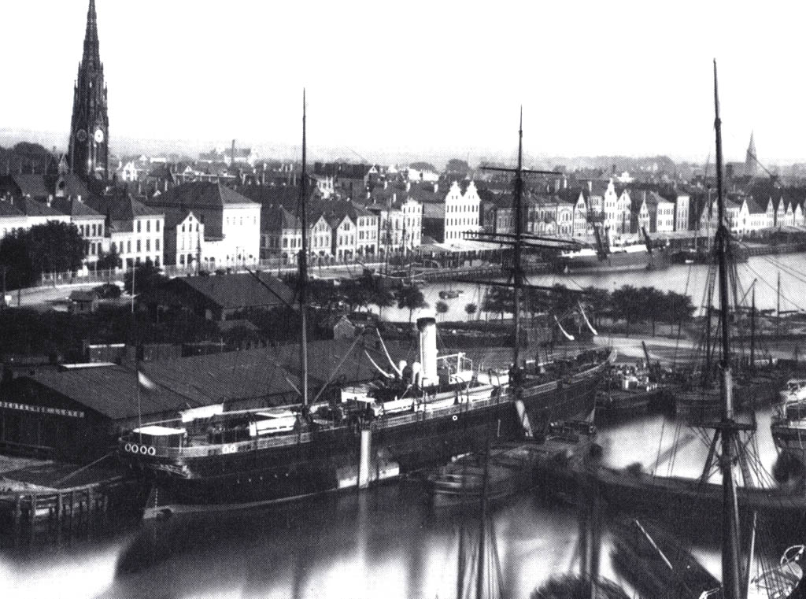

SS OHIO, Norddeutscher Lloyd, 1868. In the Neuer Hafen, Bremerhaven, about 1887. Arnold Kludas, _Die Geschichte der Deutschen Passagierschiffahrt_, Bd. 1: Die Pionierjahre von 1850 bis 1890, Schriften des Deutschen Schiffahrtsmuseums, 22 (Hamburg: Kabel, c1986), p. 171.--- With thanks to Michael Palmer: Palmer List of Merchant Vessels |